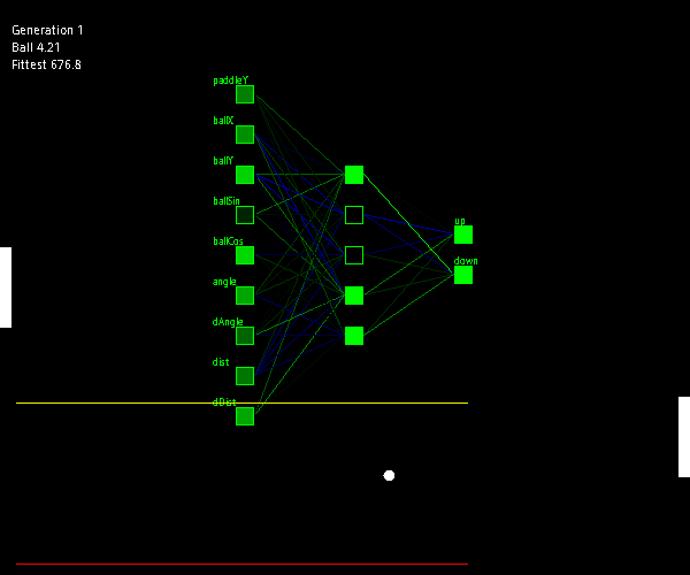
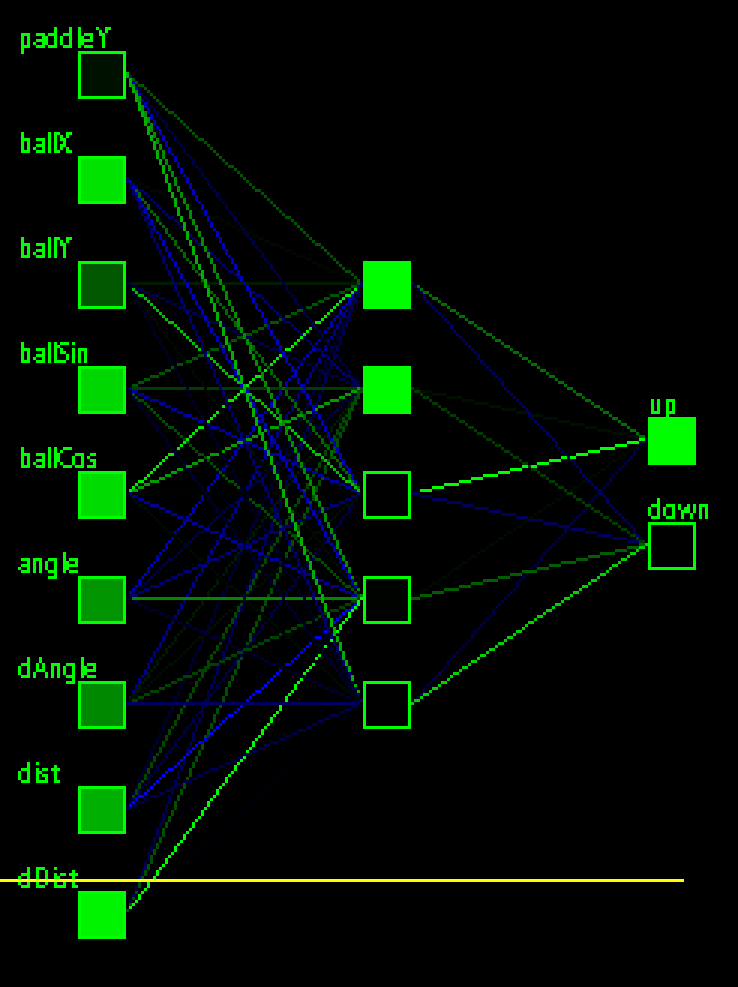

Pong AI

Neural networks & genetic algorithms
Neural nets have been around since the 1950s/60s. This Pong AI experiment was done back in 2014, around the time when a revival in neural networks was accelerating, that later brought about the deep learning, modern artificial intelligence that we associate with the term "AI" nowadays.
The Pong AI here, hovewer, has nothing to do with that deep stuff. I was largely unaware of those new developments in AI back then. This one is a very simple implementation of a 3-layer feedforward neural network.
The inputs of the network are ball position, heading, paddle position, etc. and the outputs directly control the paddle.
Visualization of the network. Sorry about the pixelation (it was a product of that time).
Instead of the usual backpropagation, the learning method I used here was a genetic algorithm. It’s an evolutionary algorithm that mimics natural selection, reproduction, and mutation to optimize the neural network’s weights. This was how the Pong "AI" learned.
To illustrate the learning process, let’s look at how the AI performs in different stages of learnedness.
Here’s an early-generation AI:
Note: The AI controls the left paddle. Ignore the right one; it’s just an automated paddle.
Generation 2
As you can see, at this stage, its behaviour is still random with little to no awareness of the ball.
Sometimes it gets lucky and catches the ball, surviving another volley! This behaviour is rewarded by higher chances of reproduction. The longest surviving AIs in that generation reproduce more to populate the next generation.
Generation 19
After a few generations, good behaviour emerges while bad behaviour dies out due to natural selection. We can see in generation 19 above that it has evolved a behaviour where it tries to follow the ball.
Now, Pong is a very simple game. If you just follow the ball constantly, you won’t lose. At about 20 generations the AI has mastered this strategy and is surviving significantly longer. One can conclude that ball-following is the perfect strategy.
Or is it? 🤔
What if the ball was faster than the paddle? Then the paddle wouldn’t be able to keep up and the ball-following strategy will fail.
And that’s exactly what I did. I sped up the ball beyond the paddle’s max speed. Here’s how the AI adapted:
Generation 54 with faster ball
At generation 54, with a faster ball, the AI has learned to predict the ball!
It also seems to reposition itself near the middle after every volley as if getting ready for the next shot.
This was a pretty cool result! I hadn’t expected this, especially considering how limited / noisy inputs were (in my human eyes, at least).
Beyond the ball-predicting strategy, I wasn’t able to discover any more breakthroughs with the AI’s behaviour. I mean, ball prediction is pretty much the true perfect strategy, regardless of ball speed. At this point I was satisfied with the experiment and moved on to something else.
Bonus video! Very fast ball, generation 700+: